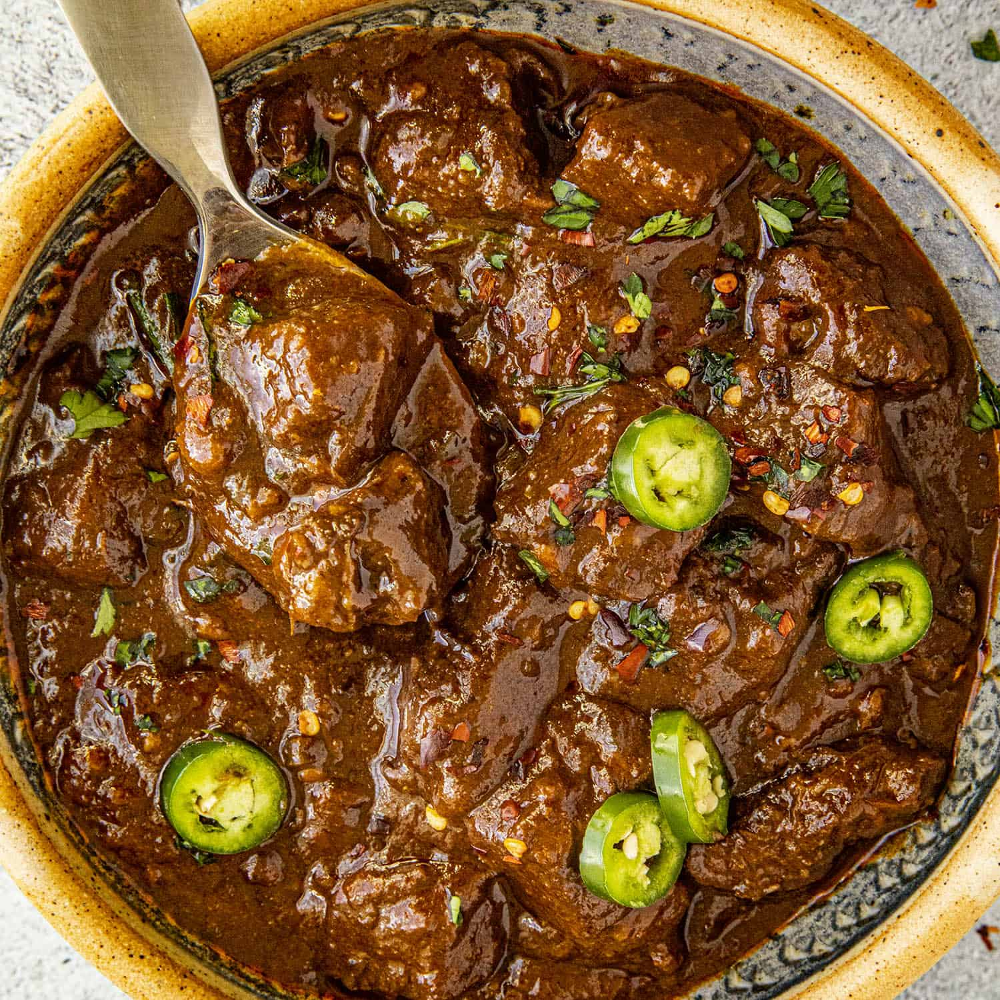

Texas Chili

This Texas chili is rich and hearty with just the right amount of heat. The beef is wonderfully tender and perfectly absorbs the smoky, savory seasoning of the pepper paste and spices.
Ingredients:
- 2 ounces dried chile peppers (such as pastilla, guajillo, New Mexico chiles, and California chiles)/li>
- 4 cups hot water
- 1 tablespoon finely chopped chipotle pepper in adobo sauce (about 2 peppers)
- 1 tablespoon canola oil
- 4 lbs boneless beef chuck roast, trimmed of excess fat, cut into 3/4-inch cubes
- 2 teaspoons kosher salt/li>
- 1/4 small red onion, cut into 1/8-inch thick wedges
Directions:
- Place peppers in a large skillet and heat over medium-low heat; cook, turning once, until lightly toasted and fragrant, 2 to 3 minutes per side. Transfer chiles to a bowl and cover with hot water; let stand for 30 minutes.
- Drain chiles, reserving about 1/2 cup of the soaking water. Use a paring knife to slice open each pepper, and remove and discard stems and seeds by running under a gentle stream of tap water.
- Combine chiles, chipotle pepper, and reserved 1/2 cup water in a blender; blend until a smooth paste forms, 15 to 30 seconds. Set aside.
- Heat oil in a Dutch oven over medium-high heat. Toss beef cubes in a large bowl with salt and pepper until evenly coated. Add half of the beef to the Dutch oven and cook, stirring occasionally to brown most sides, about 3 minutes per side. Transfer to a large plate. Repeat with remaining beef.